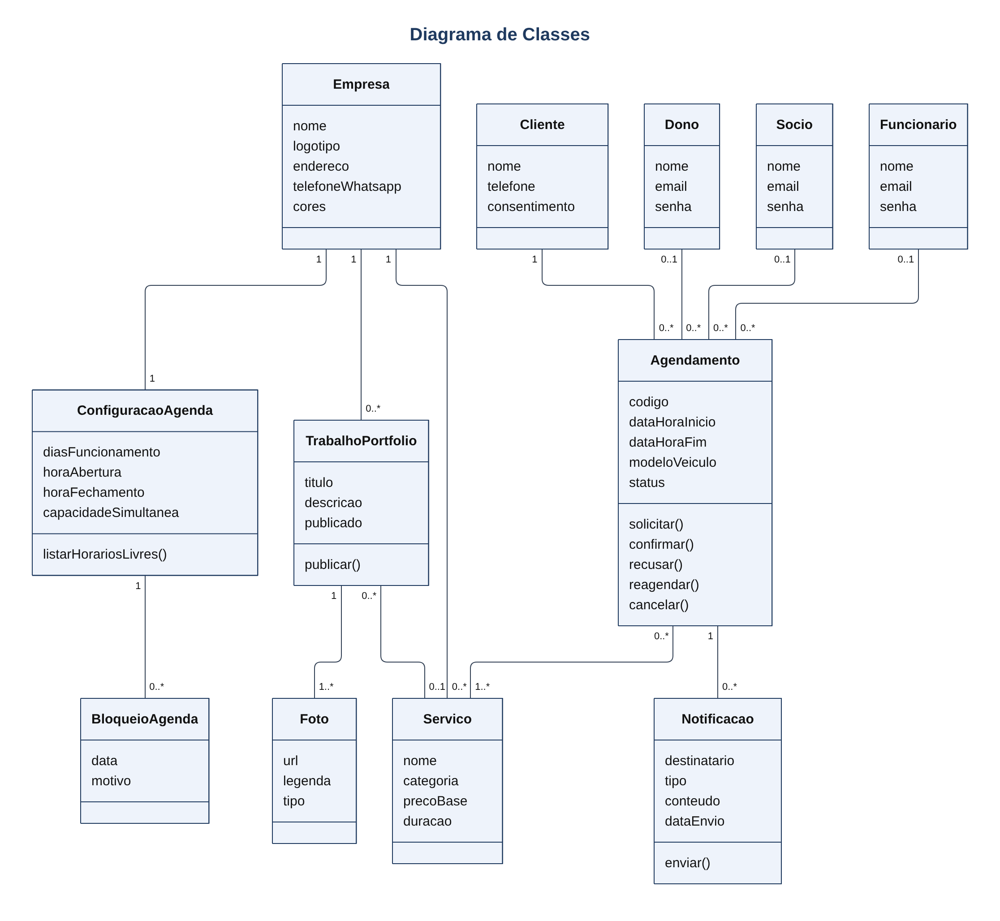
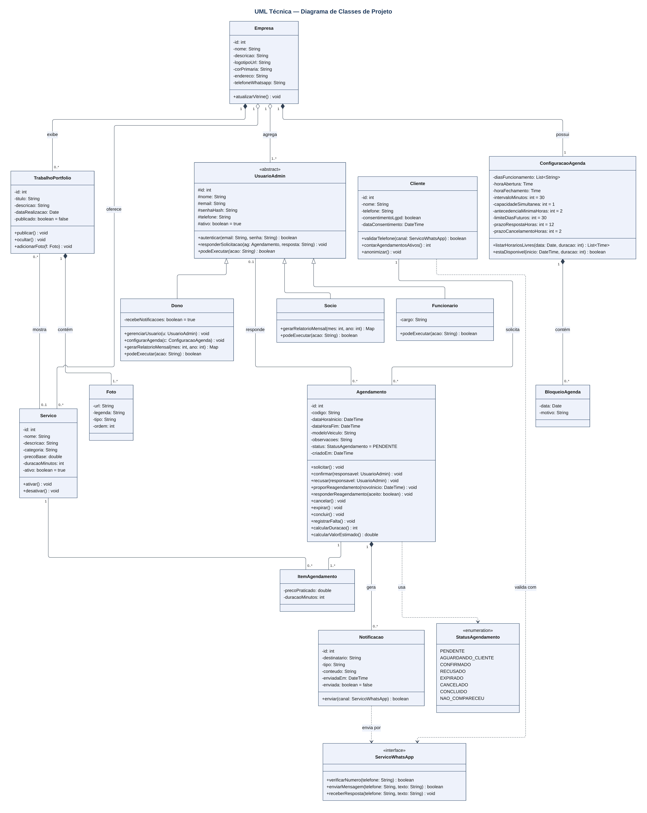

Sistema web de vitrine e agendamento para estéticas automotivas
O SmartAgenda é uma aplicação web em Node.js para estéticas automotivas. O site funciona como vitrine da empresa e como agenda online: o cliente escolhe os serviços e marca ou desmarca um horário informando apenas nome e telefone, sem cadastro. Cada pedido é enviado ao WhatsApp do dono por um robô, e o dono aceita, pede reagendamento ou recusa. A aplicação é genérica: nome, logotipo, cores, serviços e horários são configurados no painel administrativo.
| Usuário | Acesso |
|---|---|
| Cliente | Site público: vitrine, agendamento e cancelamento |
| Dono | Painel completo, incluindo usuários, agenda e vitrine |
| Sócio | Painel: agenda, serviços, portfólio e relatórios |
| Funcionário | Painel: agenda e portfólio |
Fora do escopo desta versão: pagamento online, nota fiscal, login de clientes, aplicativo nativo e controle financeiro ou de estoque.
| ID | Nome | Descrição |
|---|---|---|
| RF-01 | Exibir página inicial | Exibir nome, logotipo, descrição, endereço, horário de funcionamento e contatos da estética, com acesso ao agendamento. |
| RF-02 | Exibir catálogo de serviços | Listar os serviços ativos por categoria, com descrição, preço “a partir de” e duração estimada. |
| RF-03 | Exibir portfólio | Exibir os trabalhos publicados em galeria, com título, descrição, fotos e serviço relacionado. |
| ID | Nome | Descrição |
|---|---|---|
| RF-04 | Consultar horários disponíveis | Exibir calendário com os horários livres, calculados pela configuração da agenda e pela duração dos serviços escolhidos. |
| RF-05 | Solicitar agendamento | Permitir que o cliente escolha serviços, data e horário, informe nome, telefone e, opcionalmente, modelo do veículo e observações. O pedido é gravado com status Pendente. |
| RF-06 | Validar telefone | Confirmar junto ao provedor de WhatsApp que o telefone informado existe antes de gravar o pedido. |
| RF-07 | Cancelar agendamento | Permitir que o cliente desmarque um agendamento informando telefone e código do agendamento. |
| RF-08 | Atualizar agenda | Refletir na agenda cada mudança de status, liberando horários recusados, expirados ou cancelados. |
| ID | Nome | Descrição |
|---|---|---|
| RF-09 | Notificar novo pedido | Enviar ao WhatsApp do dono os dados do pedido e as opções 1 – Aceitar, 2 – Reagendar, 3 – Recusar. |
| RF-10 | Receber resposta do dono | Interpretar a resposta enviada ao robô e atualizar o status do agendamento. |
| RF-11 | Propor reagendamento | Enviar ao cliente o novo horário proposto e registrar se ele aceita ou recusa. |
| RF-12 | Confirmar ao cliente | Enviar ao cliente data, horário, serviços, endereço e código quando o pedido for aceito. |
| RF-13 | Avisar recusa e cancelamento | Avisar o cliente sobre recusa ou expiração do pedido, e o dono sobre cancelamento feito pelo cliente. |
| ID | Nome | Descrição |
|---|---|---|
| RF-14 | Autenticar usuário | Permitir acesso ao painel com e-mail e senha de usuário ativo. |
| RF-15 | Gerenciar usuários | Permitir que o dono cadastre, edite e desative sócios e funcionários. |
| RF-16 | Responder pedidos pelo painel | Aceitar, reagendar ou recusar pedidos pendentes pelo painel. |
| RF-17 | Visualizar agenda | Exibir agendamentos em visão diária, semanal e mensal, com filtro por status e serviço. |
| RF-18 | Criar agendamento manual | Registrar agendamento confirmado para cliente atendido por telefone ou presencialmente. |
| RF-19 | Registrar atendimento | Marcar agendamento confirmado como Concluído ou Não compareceu. |
| RF-20 | Gerenciar serviços | Cadastrar, editar, ativar e desativar serviços, com categoria, preço base e duração. |
| RF-21 | Gerenciar portfólio | Criar trabalhos com título, descrição e fotos, ordenar fotos e publicar ou ocultar cada trabalho. |
| RF-22 | Configurar agenda | Definir dias e horários de funcionamento, intervalo entre horários, capacidade simultânea, prazos e datas bloqueadas. |
| RF-23 | Personalizar vitrine | Alterar nome, logotipo, cores, descrição, endereço, contatos e número de WhatsApp das notificações. |
| RF-24 | Gerar relatório mensal | Gerar o total de agendamentos por status e por serviço e o valor estimado dos atendimentos concluídos no mês. |
| ID | Nome | Descrição |
|---|---|---|
| RNF-01 | Tempo de resposta | Páginas públicas devem carregar em até 3 s em conexão 4G; a consulta de horários livres deve responder em até 2 s. |
| RNF-02 | Tempo de notificação | A mensagem ao dono deve ser enviada em até 30 s após o pedido em pelo menos 95% dos casos. |
| RNF-03 | Disponibilidade | O sistema deve ficar disponível em 99% do tempo de cada mês. |
| RNF-04 | Capacidade | O sistema deve atender 50 usuários simultâneos mantendo os tempos do RNF-01. |
| RNF-05 | Responsividade | As telas devem funcionar sem rolagem horizontal em larguras de 360 px a 1920 px. |
| RNF-06 | Usabilidade do agendamento | O cliente deve concluir um agendamento em até 2 minutos e no máximo 4 telas. |
| RNF-07 | Segurança de acesso | Senhas armazenadas com hash bcrypt; sessão do painel expira após 30 minutos sem uso. |
| RNF-08 | Comunicação segura | Todas as páginas devem usar HTTPS. |
| RNF-09 | Imagens | Upload em JPG, PNG ou WebP de até 5 MB, redimensionado para no máximo 1600 px no maior lado. |
| RNF-10 | Backup | Cópia diária do banco de dados, mantida por 7 dias. |
| RNF-11 | Plataforma | Back-end em Node.js (LTS) com Express e banco de dados Supabase (PostgreSQL), com Supabase Storage para as fotos do portfólio. |
| RNF-12 | Configuração sem código | Uma nova estética deve entrar em operação alterando apenas dados no painel e variáveis de ambiente. |
| RNF-13 | LGPD | Coletar nome e telefone somente com consentimento explícito e anonimizar clientes sem agendamento há 12 meses. |
| RNF-14 | Integração com WhatsApp | Usar API autorizada de WhatsApp; a indisponibilidade do serviço não deve impedir o agendamento pelo site, e as mensagens pendentes devem ser reenviadas. |
| ID | Nome | Descrição |
|---|---|---|
| RN-01 | Dados mínimos | O agendamento exige nome (mínimo 3 caracteres) e telefone celular com DDD; o cliente não possui login. |
| RN-02 | Telefone existente | Só é aceito pedido com telefone ativo no WhatsApp. |
| RN-03 | Cliente único por telefone | Não pode haver dois clientes com o mesmo telefone; novos pedidos do mesmo número são vinculados ao mesmo cliente. |
| RN-04 | Serviço obrigatório | Todo pedido deve ter ao menos um serviço. |
| RN-05 | Duração | O tempo reservado é a soma das durações dos serviços e deve terminar até o horário de fechamento. |
| RN-06 | Capacidade simultânea | Agendamentos pendentes e confirmados no mesmo intervalo não podem exceder a capacidade configurada. |
| RN-07 | Antecedência | Pedidos com no mínimo 2 horas e no máximo 30 dias de antecedência (configurável). |
| RN-08 | Prazo de resposta | Pedido pendente sem resposta em 12 horas expira e o horário é liberado (configurável). |
| RN-09 | Limite por telefone | Máximo de 2 agendamentos ativos (pendentes ou confirmados) por telefone. |
| RN-10 | Confirmação | O cliente só recebe confirmação após aceite de um usuário administrativo. |
| RN-11 | Reagendamento | O novo horário deve estar livre; recusa ou falta de resposta do cliente cancela o agendamento. |
| RN-12 | Cancelamento pelo cliente | Permitido até 2 horas antes do horário (configurável). |
| RN-13 | Permissões por perfil | Cada perfil executa apenas as ações da matriz de permissões abaixo. |
| RN-14 | Gestão de usuários | Somente o dono cadastra ou desativa usuários; deve existir sempre pelo menos um dono ativo. |
| RN-15 | Preço estimado | O preço da vitrine é “a partir de”; o valor final é definido após avaliação do veículo. |
| RN-16 | Status do agendamento | Um agendamento assume um dos status: Pendente, Aguardando cliente, Confirmado, Recusado, Expirado, Cancelado, Concluído ou Não compareceu. |
| Ação | Dono | Sócio | Funcionário |
|---|---|---|---|
| Ver agenda, responder pedidos, registrar atendimento | Sim | Sim | Sim |
| Criar agendamento manual | Sim | Sim | Sim |
| Gerenciar portfólio | Sim | Sim | Sim |
| Gerenciar serviços | Sim | Sim | Não |
| Gerar relatório mensal | Sim | Sim | Não |
| Configurar agenda e vitrine | Sim | Não | Não |
| Gerenciar usuários | Sim | Não | Não |
Classes do domínio com seus atributos, operações principais e associações com multiplicidade.

Diagrama de classes de projeto com visibilidade, tipos de dados, assinaturas de métodos e tipos de relacionamento.

| Tipo | Classes |
|---|---|
| Generalização | UsuarioAdmin (abstrata) → Dono, Socio, Funcionario |
| Composição | Empresa ◆ ConfiguracaoAgenda; Empresa ◆ TrabalhoPortfolio; ConfiguracaoAgenda ◆ BloqueioAgenda; TrabalhoPortfolio ◆ Foto; Agendamento ◆ Notificacao |
| Agregação | Empresa ◇ UsuarioAdmin; Empresa ◇ Servico |
| Classe associativa | ItemAgendamento, entre Agendamento e Servico (preço e duração praticados) |
| Associação | Cliente — Agendamento; UsuarioAdmin — Agendamento; TrabalhoPortfolio — Servico |
| Dependência | Notificacao e Cliente → ServicoWhatsApp (interface); Agendamento → StatusAgendamento (enumeração) |
Cliente.telefone e Agendamento.codigo : {unique}.UsuarioAdmin.podeExecutar() : {abstract}, implementado em cada perfil conforme a matriz de permissões.Notação: + público, - privado, # protegido.